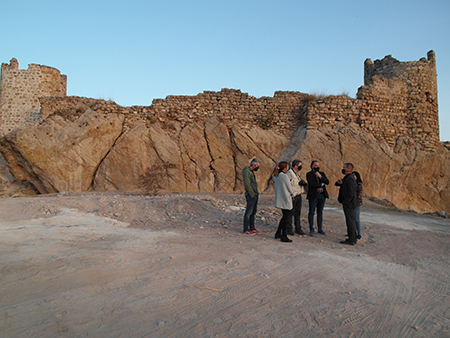

El ayuntamiento decidido a seguir actuando en el castillo de Berrueco
El alcalde y distintos miembros del Equipo de Gobierno realizan una visita al Castillo del Berrueco una vez terminadas las obras de emergencia que se han llevado a cabo en los últimos meses para evitar su derrumbe. El ayuntamiento está decidido a completar completar las obras de emergencia, realizar los trabajos de investigación arqueológica y finalizar con el proyecto de restauración y conservación definitivo.
El alcalde ha mostrado su satisfacción por la actuación realizada y ha resaltado la profesionalidad del equipo humano que ha participado en este proyecto de consolidación del castillo.